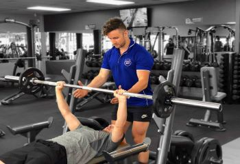
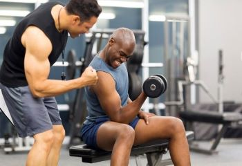

TRAINERS
Trainer is a professional in the field of fitness and exercise, most often instruction (fitness instructor), including professional sports club's fitness trainers and aerobics and yoga instructors and authors of fitness instruction books or manuals.
Certified fitness professionals must remain up-to-date on all certifications in order to instruct at particular health clubs and gyms. Often, fitness professionals will have some education in kinesiology, anatomy, and biomechanics to aid in their fitness career. In Canada, Canadian Fitness Education Services (CFES) provides national fitness leadership program modules to take candidates through the steps in Aquafit, Group Fitness and/or Weight Training Instructor and Personal Trainer national certification. Personal training, Athletic training, and physical therapy are all technically distinct specialties with different processes and requirements for certification.In the United States the main certifying agency for personal trainers is ACSM (the American College of Sports Medicine),[4] while the main certifying agency for athletic trainers is NATA (the National Athletic Trainers' Association). Obtaining certification or licensure as a physical therapist requires that one attend and graduate from a masters or doctoral program in physical therapy.
ReadmorePrefect Gym trainers
A coach can help amateur and professional athletes to be successful in a particular sport by teaching them the required skills needed. However, they can coach more than one sport to multiple people. Their role involves identifying athletes strengths and weaknesses as well as those of their opponent. Coaches also improve the physical condition of an athlete to help increase their full performance; improve form, technique, skills and stamina. A coach must be ready to work long and irregular hours including evenings, weekends and holidays. Typically, coaches are required to be a minimum 18 years of age and have a bachelor's degree. Fitness professionals need to have at least a high school diploma and in some fields, a bachelor's degree in a related field is required.
-

-

-

- 
-

- 
Heavy body Trainers
It is a long established
What is heavyweight training?
Weight training is a type of strength training that uses weights for resistance. Weight training provides a stress to the muscles that causes them to adapt and get stronger, similar to the way aerobic conditioning strengthens your heart.
Do bodybuilders train heavy?
For long-term bodybuilding, you'll eventually incorporate heavier training using lower repetitions and near-maximum weights. The purpose of heavier training in bodybuilding is to improve strength that eventually allows more high repetition training using heavier weights.